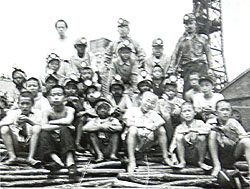
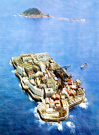

端島炭鉱の記憶（聞き取り年月日場所：2006年2月12日 滋賀県甲賀市水口町 Ｋさん自宅）  滋賀県甲賀市水口町在住のＫさんは現在65歳。長崎市の南西約16キロの海上に位置する長崎県西彼杵郡 高島町端島 三菱端島炭鉱で育った。お父さんの出身地は大分県で、生活の糧を求めて家族を引き連れ端島炭鉱へ渡った。ここで 育ったＫさんは年頃になるとお父さんと同じく端島炭鉱へ入り、昭和49年1月15日の閉山までの18年間、勤務した。
周囲約1.2キロの島は、「たばこを2本吸っているうちに1周できるほどの距離」だったが、当時ではまだめずらしかった9階建て
の高層住宅がひしめき、昭和30年代の日本経済高度成長期時代には5千人以上の人が住む人口密度世界一の海上産業都市だった。
病院・学校・警察・映画館・パチンコ店・理髪店・売店など、墓地以外はすべて揃っていた。  端島炭鉱の思い出の中で、戦時中強制連行され坑内労働に従事させられていた朝鮮の人たちのことが心に残っているという。 その人たちは昭和34年から始まった帰還事業により北朝鮮へ帰国していったが、数人の者が端島炭鉱に残ったという。 端島炭鉱は現在、当時の記憶を封じたまま廃墟と化し、一部の写真家等には「軍艦島」として人気を得ている。「また行って みたいですか。懐かしいでしょうね。」と私はＫさんに聞いてみた。「行ってみたいとは思わない。廃墟となったふるさとは悲 しいだけ。そんなふるさとは見たくもない。」とＫさんは言った。
しかし、そう語るＫさんの書棚は、たくさんの「軍艦島」のビデオや写真集で詰まっていた。また、Ｋさんの手元に端島出身
者の全国名簿が置かれていた。Ｋさんがコツコツと作成していったもので、滋賀県内でも15名の端島出身者を把握しているという。
「5年に1回、集まりを開いているが、出身者の高齢化も手伝ってあまり人が集まらない」と寂しげに語った。
|